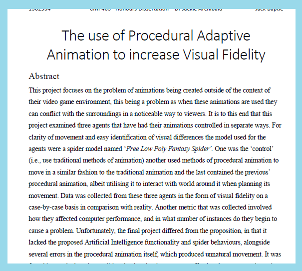

This project was built with:
Summary of skills learned in this project:
Download a copy of the dissertation in pdf format here:  Download a copy of the source code here:
This project is the culmination of my Honours (4th) year of the Abertay course Computer Games Application Development Dissertation. It is an investigation into the power of procedural animation compared to traditional animation regarding fidelity. It concludes that the time investment into procedural animation does not garner more visual appeal as much as traditional animation, and unless the movement is a large focus where accuracy of foot placement is more important than visual appeal, is not cost-effective.